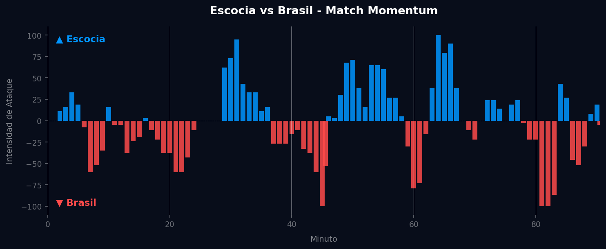
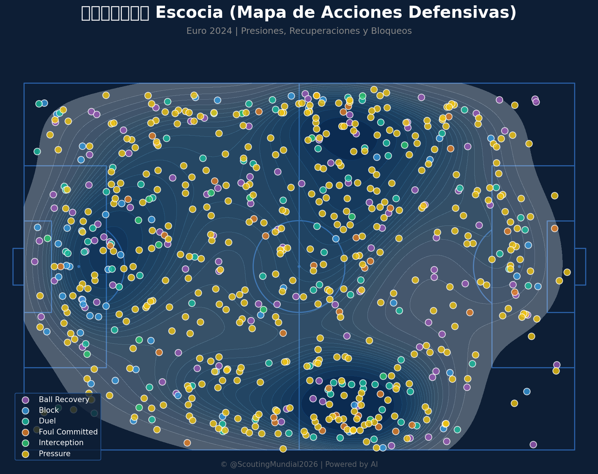
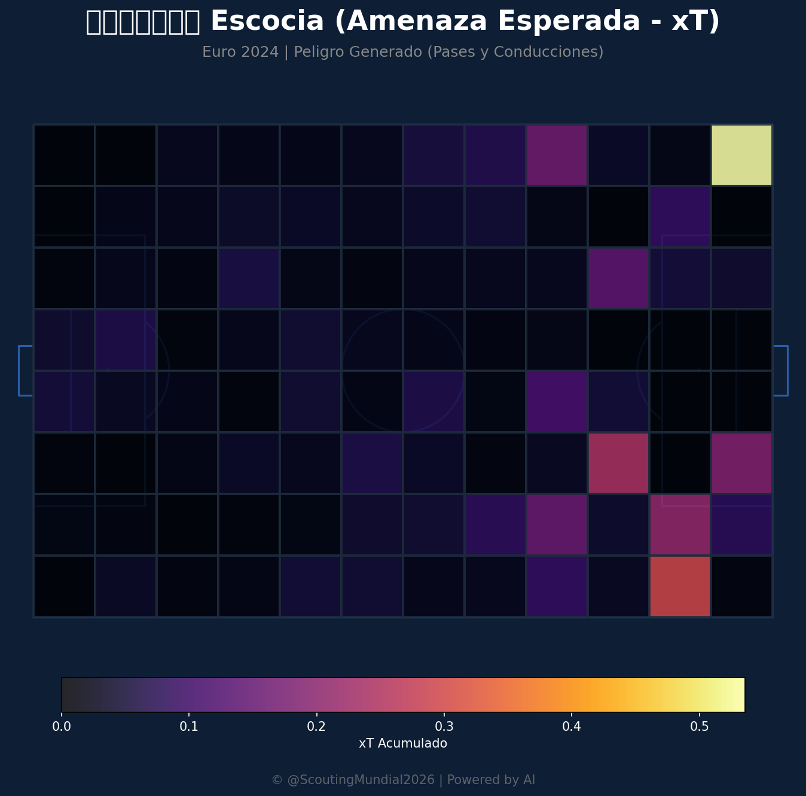
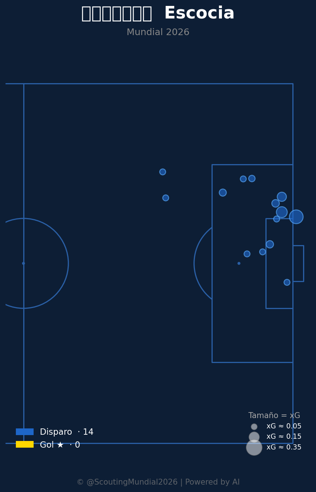
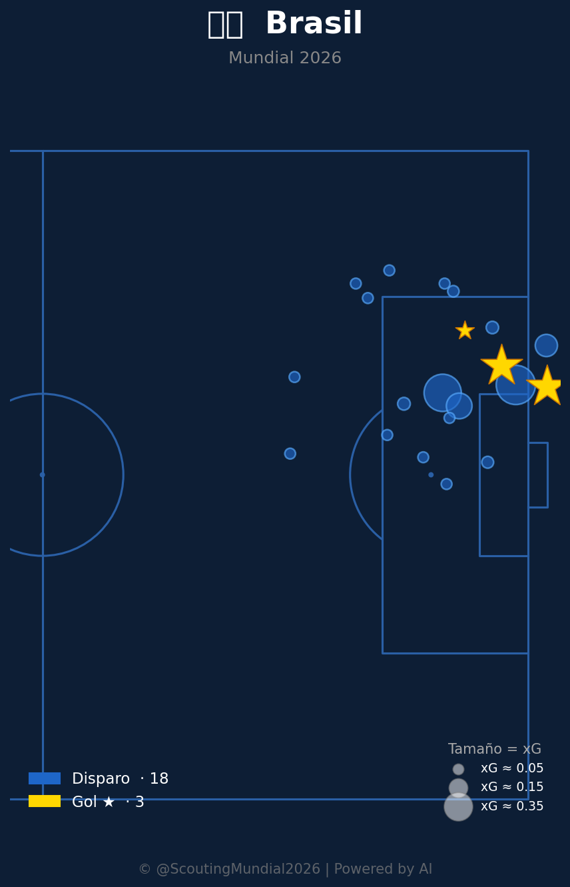
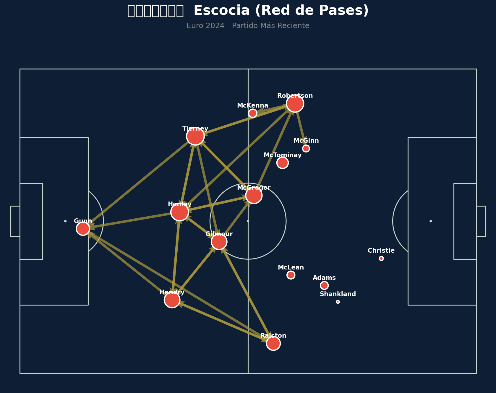
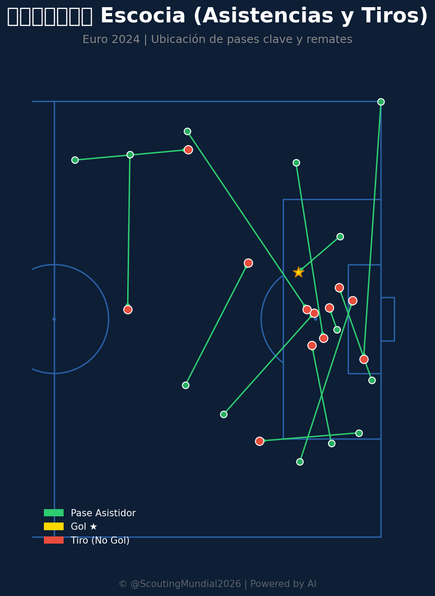

Grupo C
 Brasil
Brasil
Escocia vs Brasil
📅 2026-06-24 · 🕒 22:00 (Local)
Escocia

0 - 3
FINALIZADO
Brasil
📅 2026-06-24 · 🕒 22:00 (Local)
Brasil
El encuentro entre Escocia y Brasil por el Grupo C del Mundial 2026 fue un claro testimonio de la superioridad brasileña, aunque el marcador final no reflejó la combatividad inicial escocesa. Brasil abrió el marcador temprano, al minuto 22, con una brillante jugada individual de Vinicius Jr. que culminó con un remate cruzado imparable, aprovechando una desorganización defensiva momentánea. Antes del descanso, en el minuto 43, Rodrygo amplió la ventaja para la Canarinha, finalizando una rápida transición que dejó expuesta la retaguardia escocesa, aprovechando el impulso ofensivo brasileño de final de la primera mitad. El segundo tiempo mostró a una Escocia más decidida a buscar el descuento, elevando su intensidad y presionando la salida de Brasil en algunos lapsos. Sin embargo, la solidez defensiva brasileña y la maestría para manejar los tiempos del partido frustraron sus intentos. El golpe definitivo llegó en el minuto 78, cuando un cabezazo de Marquinhos tras un córner sentenció el 3-0, apagando cualquier esperanza de reacción escocesa y asegurando una victoria contundente para Brasil.
El análisis del Match Momentum revela una dinámica de partido más equilibrada en cuanto a fases de empuje de lo que el 3-0 final sugiere. Brasil alcanzó su intensidad máxima (100.00) justo al cierre del primer tiempo (minuto 45), coincidiendo con el momento en que Rodrygo anotó el segundo gol, consolidando la ventaja y demostrando una estrategia de desgaste antes del descanso. Escocia, por su parte, tuvo su pico de intensidad (100.00) en el minuto 64, una clara señal de su intento por revertir la situación en la segunda mitad y buscar el gol que los metiera en el partido. A pesar de que Escocia dominó en intensidad el 44.6% del partido y Brasil el 46.7%, la diferencia reside en la eficacia. Brasil supo capitalizar sus momentos de mayor ímpetu con goles, mientras que la presión escocesa, aunque significativa, careció de la contundencia necesaria para perforar la defensa rival. Esto subraya que el control efectivo de los momentos clave fue decisivo para el resultado.

Escocia se presentó con una disposición táctica pragmática, probablemente un 5-4-1 o un 4-5-1, buscando cerrar los espacios centrales y las bandas para contener la arremetida brasileña. En el mediocampo, intentaron generar una doble línea de contención que por momentos fue efectiva, forzando a Brasil a circular el balón sin profundidad. Los aciertos se vieron en su disciplina defensiva inicial y en la capacidad para resistir los embates directos, especialmente en el inicio de la segunda parte. Sin embargo, la incapacidad de Escocia para transicionar de defensa a ataque con peligro y su falta de pegada ofensiva fueron sus principales verdugos. La imposición de su estilo físico y de lucha fue insuficiente para desestabilizar la calidad individual y colectiva de Brasil, sufriendo al final por la brecha de talento y la precisión táctica rival.
Brasil desplegó un planteamiento táctico flexible y ofensivo, probablemente un 4-3-3 que mutaba a un 4-2-3-1 en fase ofensiva, con Vinicius Jr. y Rodrygo como extremos dinámicos y un pivote sólido en el mediocampo. Su principal virtud fue la capacidad de desequilibrar por las bandas, apoyándose en la velocidad y el regate de sus atacantes, sumado a la calidad de sus centrocampistas para filtrar balones y generar juego. En defensa, el bloque brasileño operó con inteligencia, alternando entre una presión alta tras pérdida y un bloque medio para atraer a Escocia y luego explotar los espacios con transiciones rápidas. La respuesta ante el rival fue ejemplar: paciencia para construir el juego, efectividad clínica frente al arco y una solidez defensiva que no permitió a Escocia generar ocasiones claras, incluso en sus momentos de mayor intensidad.
El duelo táctico entre los entrenadores fue un claro ejemplo de la imposición de la calidad individual y la eficiencia colectiva sobre la organización defensiva y el espíritu de lucha. El técnico brasileño priorizó el aprovechamiento de la velocidad y el talento en los flancos, sabiendo que la paciencia y la circulación de balón abrirían huecos en la defensa escocesa. Por su parte, el entrenador de Escocia optó por la contención y la resistencia, esperando un error o una oportunidad a balón parado que nunca llegó. El veredicto final es que el marcador de 3-0, aunque pudo sentirse duro para Escocia dada su entrega y sus momentos de intensidad, fue un reflejo justo de la superioridad brasileña en la concreción de oportunidades y en la capacidad para gestionar los momentos clave del partido. La eficacia de Brasil ante el arco fue determinante, dejando en evidencia las limitaciones ofensivas de Escocia.










